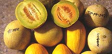
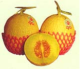

洋香瓜
別名網仔瓜、澎湖瓜、哈密瓜、美濃瓜
台灣種植種類繁多，包括有網紋洋香瓜、蜜瓜型洋香瓜、哈密瓜等類，品種可謂琳瑯滿目，不但香甜可口、品質絕佳，且外型美觀，能一飽口福，還可供觀賞。洋香瓜果實營養豐富含蛋白質、脂肪。全糖、鈣、鐵外，尤以維他命C及維他命A含量高，每100公克，維他命C含量達30～50mg，維他命含量更有達國際單位4,280IU者，本草綱目目記載：甜瓜瓤〞止渴、除煩熱、利小便、通三焦壅塞氣、治口鼻瘡、暑日食之永不中暑〞，堪稱為果中珍品。

台灣洋香瓜產地
大多集中在台南、嘉義一帶，
以台南市安南區、七股鄉栽培歷史最久，
面積也多，新興地區則以佳里鎮、後壁鄉、白河鎮、鹽水鎮、東山鄉栽培較多，尤以佳里鎮共同運銷班所產洋香瓜品質好、分級包裝徹底，已在消費市場打出一片天地。此外全省各地都有洋香瓜產地，蘭陽地區的壯圍、蘇澳以出產新世蜜哈密瓜而聞名，桃園新屋鄉、雲林崙背鄉、水林鄉太保市、義竹鄉、鹿草鄉等各有一、二百公頃之栽培面積。本省氣候終年均可生產洋香瓜，農民朋友刻苦勤勞，在栽培困難、風險較大的季節仍要賭，全年市場上都可買到洋香瓜；不過主要產季大都集中在春、秋二季，大約自十一份至翌年、五月為生產旺季。

如何挑選洋香瓜?
通常消費者買到不好吃、品質較差的洋香瓜，除了季節性之外，其原因不外乎發病株、植株衰弱、提前枯死株所採之果實，或採收期太早或過時，或採收後期(俗稱瓜仔尾)之果實。如生育後期果實近成熟時，感染毒素病株果，會顯現毒綠斑點像星星般分佈在果皮上，網紋平或內陷，此種果不甜甚至會有苦味。植株衰弱及枯死株的果實會提前變色(俗稱假黃)，但色澤不鮮明，網紋稀疏不均。果實尚未達成熟採收，外皮顏色青綠色還未轉化為該品種應有的色澤；過遲採收外皮顏色較濃，果蒂容易脫落，果肉軟化甚至變成醱酵果(果肉透明、發生酒味，吃時有苦澀辛味)。採收後期(瓜仔尾)，由於植株壽命將竭，果實會較小，網紋發育不齊，形狀較差，風味甜度降低。上述都是品質不良的特徵，消費者購買時如何選擇呢？大致上網紋香瓜類選網明顯而豐滿，外皮具該品種應有的色澤而鮮明，形狀符合品種特性，果蒂新鮮，將發生離層而尚未脫蒂者，就差不到那去了。蜜瓜類如蜜世界、銀嶺、翡翠綠等未成熟皮色淡白，成熟時轉為很淡的乳黃而微白色，購買時就是要選擇這種色澤，果蒂新鮮，果形端正。狀元或太陽則選果蒂新鮮，顏色愈金黃色愈佳，據筆者經驗蜜瓜類雖表皮光滑，偶會發現有細疏網紋出現，品質比表面完全光滑者更佳。
資料來源: